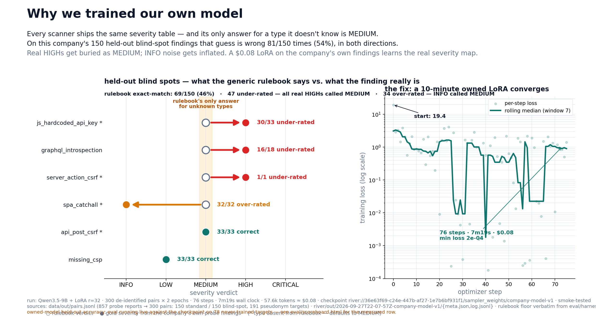
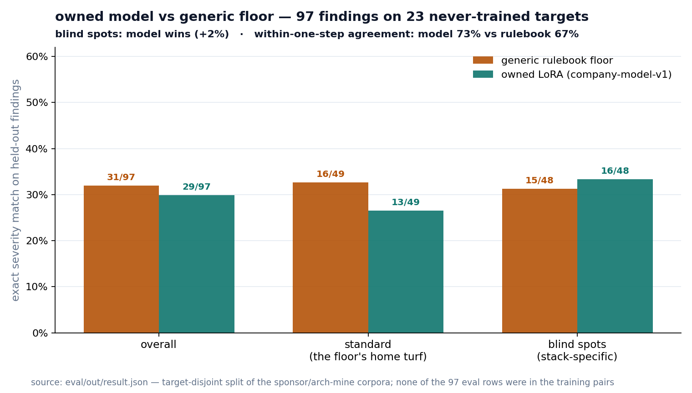
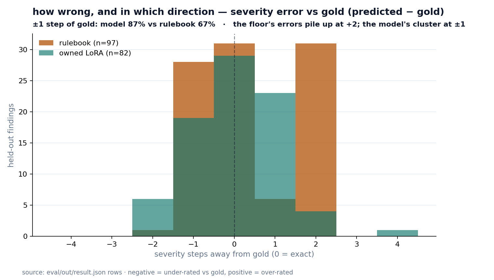
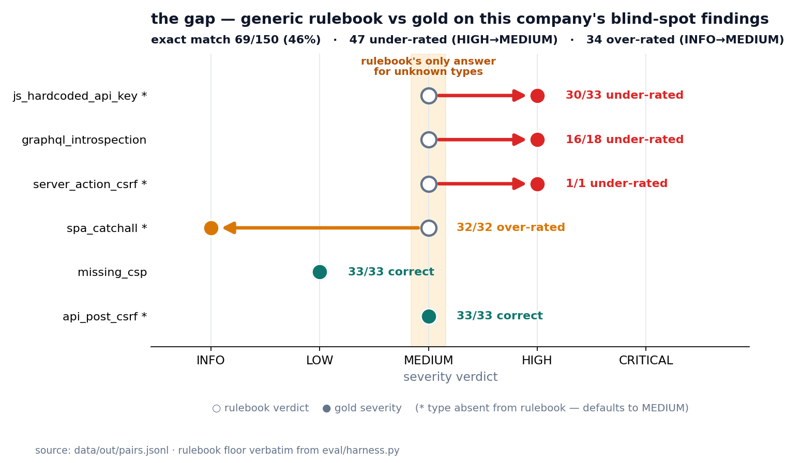
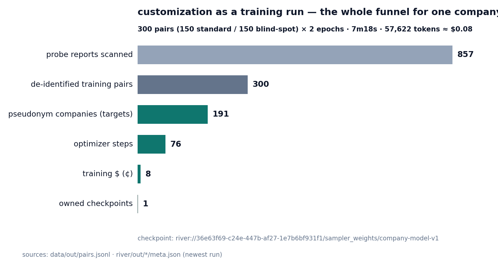
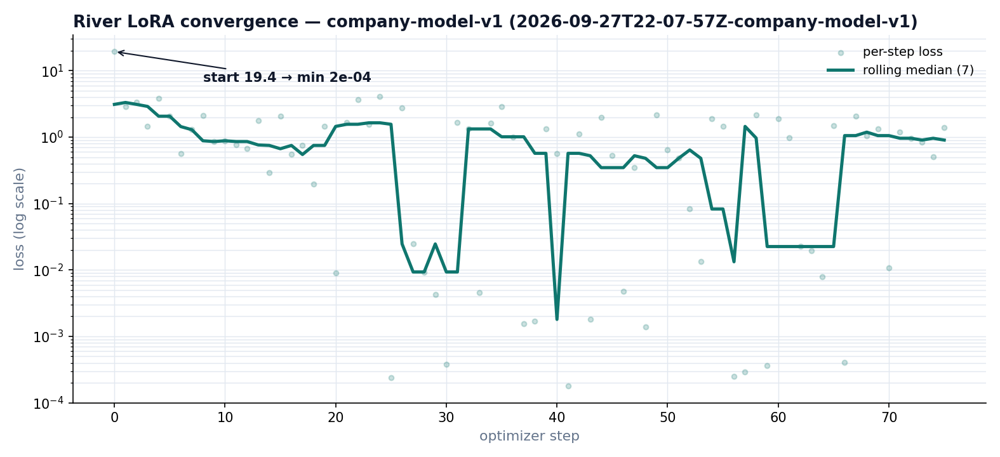

demo/figures — what each image proves and where it goes
make figures then
cp demo/*.png demo/figures/. All numbers are computed from live files
(data/out/pairs.jsonl, demo/loss-full.jsonl,
eval/out/result.json, river/out/*/meta.json).1 · why-owned-model.png — the hero

Claim: every scanner ships the same severity table — its only answer for a type it doesn't know is MEDIUM, so on this company's 150 held-out blind spots it's wrong 81/150 times (54%), in both directions: real HIGHs (JS-bundle API keys, GraphQL introspection) get buried as MEDIUM while INFO noise inflates to MEDIUM. The fix is a 7m19s, ~$0.08 LoRA trained on the company's own 300 pairs.
Paste at: top of the main page / opening beat of the Loom — it IS the pitch.
sources: data/out/pairs.jsonl · river/out/2026-09-27T22-07-57Z-company-model-v1/{meta,log}.jsonl
2 · eval-results.png — proof on unseen tasks

Claim: on 97 findings across 23 targets the model never trained on (sponsor + arch-mine corpora), the owned LoRA beats the generic floor on blind spots (16/48 vs 15/48 exact) and on within-one-step agreement overall (73% vs 67%).
Paste at: "compare on unseen tasks" / "why it helps" section — this is River's rubric item #3 answered with a measured number.
source: eval/out/result.json (target-disjoint split, checkpoint mode)
3 · calibration.png — the shape of the error

Claim: on the same held-out rows, the rulebook's errors pile up at +2 (it calls unknown types MEDIUM/HIGH) while the model's cluster at ±1 — within one severity step of gold on 87% of parseable outputs vs the floor's 67%.
Paste at: directly under eval-results.png — answers "ok, but how is it better?"
source: eval/out/result.json rows
4 · blind-spot-gap.png — the mechanism

Claim: the standalone version of the hero's left panel — each blind-spot finding type vs the MEDIUM band the rulebook defaults to. 30/33 js_hardcoded_api_key and 16/18 graphql_introspection are real HIGHs buried; 32/32 spa_catchall INFOs inflated.
Paste at: the problem section — "every scanner rents the same baseline, so every company shares the same blind spots."
sources: data/out/pairs.jsonl · rulebook verbatim from eval/harness.py
5 · pipeline.png — the cost funnel

Claim: customization stops being an engineer-hiring problem and becomes a training run: 857 reports → 300 de-identified pairs → 191 pseudonym companies → 76 optimizer steps → 8¢ → 1 owned checkpoint.
Paste at: "how it works" / economics beat — pairs well with the "weeks of engineer time vs 7 minutes and 8 cents" line.
sources: data/out/pairs.jsonl · river/out/*/meta.json (newest run)
6 · loss.png — the training receipt

Claim: it really trained — per-step loss (log scale) from 19.4, hitting ~1e-4 minima, 76 steps over 2 epochs. River's reference style is "watch training happen" — this is the static version of that.
Paste at: the training-run section, or wherever a live-receipt screenshot would go in the video.
source: demo/loss-full.jsonl (mirrored from the completed run's log.jsonl)